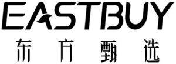

Trade Mark Journal No.2025/039 26 September 2025
WO0000001875244 (3,5,8,9,15,16,18,21,24,25,26,28,29,30,31,32,33,35,38,41)
Office of origin: China
Date of International Registration:8 April 2025
Date of designation in the UK:
8 April 2025

International priority date claimed: 12 February 2025
(China)
(83416120)
International priority date claimed: 12 February 2025
(China)
(83416135)
International priority date claimed: 12 February 2025
(China)
(83416410)
International priority date claimed: 12 February 2025
(China)
(83416423)
International priority date claimed: 12 February 2025
(China)
(83416555)
International priority date claimed: 12 February 2025
(China)
(83416857)
International priority date claimed: 12 February 2025
(China)
(83417874)
International priority date claimed: 12 February 2025
(China)
(83417969)
International priority date claimed: 12 February 2025
(China)
(83417972)
International priority date claimed: 12 February 2025
(China)
(83417996)
International priority date claimed: 12 February 2025
(China)
(83419544)
International priority date claimed: 12 February 2025
(China)
(83419600)
International priority date claimed: 12 February 2025
(China)
(83421818)
International priority date claimed: 12 February 2025
(China)
(83422390)
International priority date claimed: 12 February 2025
(China)
(83422555)
International priority date claimed: 12 February 2025
(China)
(83424257)
International priority date claimed: 12 February 2025
(China)
(83424901)
International priority date claimed: 12 February 2025
(China)
(83427102)
International priority date claimed: 12 February 2025
(China)
(83427116)
International priority date claimed: 12 February 2025
(China)
(83428251)
- Class 3
- Cosmetics for animals; cosmetics; potpourris [fragrances]; hand cleaning preparations; washing-up liquids; toothpaste; abrasives; air fragrancing preparations; soap; shoe polish; essential oils; bath foams; hand cream; lipsticks; pre-moistened towelettes impregnated with a detergent for cleaning; cotton wool impregnated with make-up removing preparations; mouthwashes; liquid laundry detergents; cosmetic preparations for skin care.
- Class 5
- Chinese patent medicine; ginseng for medical purposes; medicines for human purposes; cordyceps sinensis for medical purposes; depuratives; dietetic substances adapted for medical use; food for babies; antibacterial hand lotions; pesticides; Chinese boxthorn fruits for medical purposes; sanitizing wipes; disinfectant wipes; dental lacquer; air purifying preparations; dietary fiber; medicinal wine; saffron [traditional Chinese medicinal material]; tonics [medicines]; donkey-hide gelatin for medical purposes; cod liver oil; nutritional supplements; dietetic foods adapted for medical purposes; dietetic beverages adapted for medical purposes; pharmaceutical preparations for skin care; gummy vitamins; radioactive substances for medical purposes; oxygen baths; chemical conductors for electrocardiograph electrodes; semen for artificial insemination; disinfectants; contact lens cleaning preparations; nutritive substances for microorganisms; medicines for veterinary purposes; adhesive bandages [dressings]; diapers for pets.
- Class 8
- Secateurs; swords; scissors; hand tools, hand-operated; apparatus for destroying plant parasites, hand-operated; fulling tools [hand tools]; blade sharpening instruments; sharpening instruments; graving tools [hand tools]; tableware [knives, forks and spoons]; nail clippers; beard clippers; screwdrivers, non-electric; knives; hoes [hand tools]; garden tools, hand-operated; hand-operated pumps; tweezers; handles for hand-operated hand tools.
- Class 9
- Downloadable images for mobile phones; bathroom scales; ring stands for mobile telephones; in-car telephone handset cradles; lanyards for mobile telephones; sunglasses; eyeglass frames; refrigerator magnets; mobile phone software applications, downloadable; computer software applications, downloadable; computer software, recorded; electronic publications, downloadable; computer peripheral devices; downloadable image files; data processing apparatus; computer programs, recorded; smartwatches [data processing]; tablet computers; USB flash drives; solid state drives; downloadable emoticons for mobile telephone; computer keyboards; counters; apparatus to check franking; invoicing machines; mechanisms for coin-operated apparatus; dictating machines; holograms; hemline markers; voting machines; electronic terminals for generating lottery tickets; face recognition apparatus; ticket dispensing terminals, electronic; time clocks [time recording devices]; weighing apparatus and instruments; measures; signs, luminous; smartphones; cell phone cases; cases for smartphones; stands adapted for mobile phones; covers for smartphones; cell phones; selfie sticks for mobile phones; navigational instruments; protective films adapted for smartphones; portable media players; video disc players; sound recording discs; earphone; cameras [photography]; measuring instruments; air analysis apparatus; speed checking apparatus for vehicles; temperature indicators; teaching apparatus; measuring devices, electric; simulators for the steering and control of vehicles; optical apparatus and instruments; data cables for cell phones; semiconductors; electronic chips; magnets; mains adaptors; video screens; remote control apparatus; optical fibres [light conducting filaments]; heat regulating apparatus; lightning arresters; ionization apparatus not for the treatment of air or water; fire extinguishing apparatus; X-ray apparatus not for medical purposes; protection devices for personal use against accidents; alarms; eyeglasses; batteries, electric, for vehicles; mobile power supply [rechargeable battery]; animated cartoons; portable remote controlled spike strips for stopping cards by puncturing tyres; egg-candlers; decorative magnets; electronic collars to train animals; sports whistles; electrified fences.
- Class 15
- Musical instruments; cases for musical instruments; buccins [trumpets]; horsehair for bows for musical instruments; muyu [a hollow wooden block as a percussion instrument]; tuning hammers; membrane for bamboo flute; reed instruments; pianos; skins for drums.
- Class 16
- Copybooks; writing instruments; writing materials; writing implements [writing instruments]; calligraphy ink; bookmarkers; books; book jackets; bookbinding material; pocket memorandum books; printing sets, portable [office requisites]; note papers; pads [stationery]; writing tablets; food wrapping plastic film for household use; letterhead paper; envelopes; envelopes [stationery]; letter paper [finished products]; children's storybooks; children's activity books; painting sets for children; pencil sharpening machines, electric or non-electric; paper-cut artwork; scrap books; plastic film for wrapping; paper bags for packaging; bags [envelopes, pouches] of paper or plastics, for packaging; packing paper; paper for bags and sacks; toilet paper; printed publications; printed matter; printed cartoon strips; printed recipe cards; printing paper [including offset paper, newsprint, text paper, bond paper, intaglio paper and typographic paper]; stamp pads; stamping inks; inkpad; stamps [seals]; pencil sharpeners; tissues of paper for removing make-up; kitchen paper; cardboard packaging boxes in collapsible form; 3D decals for use on any surface; paper coffee filters; pictures; maps; atlases; atlas paper; terrestrial globes; plastic gift wrap; shopping bags of plastic; bags made of plastics for food refrigerating and storage; coloring books; Indian inks; duplicating paper; plastic food storage bags for household use; garbage bags of paper [for household use]; children's books incorporating electronic audible device; lithographic works of art; architects' models; letter openers; stapling presses [office requisites]; punches [office requisites]; typewriters; desktop document racks with glare shield; story books; teaching wall maps; teaching materials [except apparatus]; realia for mathematics; folders for papers; wrappers [stationery]; stationery; gummed tape [stationery]; gummed cloth for stationery purposes; travel books; calendars; postcards; postcard paper; periodicals; desktop cabinets for stationery [office requisites]; modelling materials; modelling clay; stencil cases; song books; plotting scales; writing brushes; canvas for painting; posters; statuettes of papier mâché; filter paper; comic books; manga graphic novels; laser printing paper; cook books; paintboxes; encyclopaedias; ink stones [ink reservoirs]; magnetic writing tablets; pop-up books; pens; pencil holders; pen cases; note books; candy wrapping sheet; sketch books; events albums; paper; paper pennants; packaging boxes of paper; paper name badges; paper containers; bunting of paper; face towels of paper; cream containers of paper; paper gift tags; table linen of paper; towels of paper; packing [cushioning, stuffing] materials of paper or cardboard; packing materials of paper or cardboard [for stuffing or cushioning]; placards of paper or cardboard; stuffing of paper or cardboard; handkerchiefs of paper; packaging boxes of cardboard; gift boxes made of cardboard; paper bags; table napkins of paper; exercise books; drawing instruments; paintings and calligraphic works; papers for painting and calligraphy; drawing sets; drawing materials; drawing boards; drawing paper; drawing pens; adhesive note paper; paper wine gift bags; crayons; writing paper pads; prospectuses; stickers [stationery]; greeting cards; staple remover [office supplies]; cartoon strips; comic books; comic magazines; sketchbooks; steel pens; pencils; baking paper; conical paper bags; apparatus for mounting photographs; musical greeting cards; paint trays; food-wrapping paper; stencils for decorating food and beverages; recipe books; napkin paper; tailors' chalk; mezuzah parchments.
- Class 18
- Umbrellas; bags; bags [envelopes, pouches] of leather, for packaging; leather, unworked or semi-worked; leather trimmings for furniture; valises; walking sticks; leather thongs; backpacks; harness fittings; handbags; trunks [luggage]; pocket wallets; bags for carrying pets; clothing for pets.
- Class 21
- Mangers for animals; cosmetic utensils; trash cans for household purposes; pet feeding bowls; litter trays for pets; indoor terrariums [vivariums]; containers for household or kitchen use; insect traps; washing boards; clothes drying hangers; combs; works of art for glass; sweepers; perfume burners; flat-iron stands; toothbrushes; toothpicks; porcelain ware; household containers of precious metal; liqueur sets; thermally insulated containers for food; birdcages; bath sponges; stew-pans; cauldrons; non-electric cooking pots; cutting boards for the kitchen; chopsticks; potholders; spice sets; cruets; place mats of plastic; abrasive pads for kitchen purposes; strainers for household purposes; dusting cloths [rags]; household glassware [including cups, plates, jugs and urns]; pill organizers for personal use; brushes; material for brush-making; crystal [glassware].
- Class 24
- Cloth napkins for removing make-up; towels of textile, compressed; household linen; bed linen; hand towels; tablecloths, not of paper; felt; dish towels; bath towels; sleeping bags; wall hangings of textile; textile exercise towels; towels of textile; face towels of textile; table napkins of textile; fabric; tea towels; quilts; cotton fabrics reinforced with metal fibres; face cloths; plastic material [substitute for fabrics]; door curtains; fitted toilet lid covers of fabric; marabouts [cloth]; hada [greeting fabric]; banners of textile or plastic; shrouds.
- Class 25
- Tee-shirts; underwear; underpants; scarfs; layettes [clothing]; hats; gloves [clothing]; shawls; clothing; swimsuits; sleep masks; pajamas; dressing gowns; down garments; vests; belts [clothing]; hosiery; sports jerseys; waterproof clothing; headbands against sweating; shoes; neckties; windbreakers; beachwear for sun protection; cotton-padded jackets; trousers; coats; thermal underwear; chasubles; sashes for wear; shower caps; hairdressing capes; wedding dresses.
- Class 26
- Numerals or letters for marking linen; artificial flowers; false hair; heat adhesive patches for decoration of textile articles [haberdashery]; buttons; lace trimmings; trimmings for clothing; needles; sewing boxes; shoe trimmings; hair extensions; shoulder pads for clothing; breast lift tapes.
- Class 28
- Ice skates; machines for physical exercises; Christmas tree decorations (excluding articles for illumination and confection); archery implements; shin guards [sports articles]; knee guards [sports articles]; chess; baseball gloves; manipulative logic games; toys; in-line roller skates; playing balls; fishing tackle; body-building apparatus; electronic games for the teaching of children; building blocks, large size; building blocks [toys]; cube-type puzzles; hunting game calls; swimming pools [play articles]; synthetic rubber racetracks; twirling batons; camouflage screens [sports articles]; scratch cards for playing lottery games; grip tapes for rackets.
- Class 29
- Silkworm chrysalis for human consumption; snack food based on fruits and vegetables; freeze-dried meat; freeze-dried vegetables; processed pumpkin seeds; nuts, prepared; processed betel nuts; fruit, processed; vegetables, processed; processed, edible seaweed; processed fish; luncheon meats, canned; salted vegetables; salted eggs; potato-based dumplings; potato crisps; bacon; sausage casings, natural or artificial; milk; milk products; powdered milk; cheese; poultry, not live; crayfish, not live; dried sweet potatoes; sheets of dried laver; vegetables, dried; dried scallops; dried edible mushrooms; prawns, not live; jams; dried durians; canned fishery products; dried fruits; fruits, canned; sea-cucumbers, not live; dried shelled shrimp; jelly fish body; dried whelk meat; dried fruit mixes; ham; condensed milk; roast beef; smoked meat; cows' milk; milk jam; beefsteaks; beef meatballs; dried beef; preparations for making bouillon; beef slices; beef tripe; extra-virgin olive oil; pork steaks; lard; pork; charcuterie; preserved eggs [century eggs]; takoyaki; rice milk; lamb croquettes; meat; meatballs; meat jellies; dried meat; meat floss; meat extracts for culinary purposes; broth; broth concentrates; sliced meat; meat, canned; dried meat slices; fruit, preserved; meat, preserved; preserved garlic; vegetables, preserved; fish, preserved; preserved peppers; dried mangoes; sesame seed paste; peanut butter; meat substitutes made of vegetable; vegetables, canned; shrimps, not live; dried prawns; shrimp floss; dried corbiculidae meat; eggs; dried razor clam meat; crabs, not live; crab meat; blood sausage; soybean milk; tofu products [bean curd products]; quick-frozen convenience dishes with meat predominating; quick-frozen sweet corn; yogurt; jellies for food, other than confectionery; linseed oil for food; cocoa butter for food; olive oil for food; oils for food; edible fats; seaweed extracts for food; edible birds' nests; colza oil for food; sausages; fish, not live; fish croquettes; fish-based foodstuffs; fish meat floss; fish, canned; shark fin; dried fish meat; fish sausages; squid，not live; cods [not live]; chicken; chicken croquettes; hen eggs; quail eggs; butter; lobsters, not live; meat loaf; chicken legs; chicken wings; quick-frozen chicken; fish fillets; gyros meat; chicken nuggets; cured meat; chicken feet for human consumption; croquettes; sweet corn, processed; sunflower oil for food; stir-fried chestnuts with sugar; flavoured nuts; salted cashews; potato chips; dried Chinese dates; duck neck; soya milk [milk substitute]; bird's nest stewed with crystal sugar.
- Class 30
- Freeze-dried dishes with the main ingredient being rice; udon noodles; oolong tea; rice-based snack food; beverages with tea base; cereal-based snack food; rice glue balls; eight-treasure rice pudding; iced coffee; ice blocks; ice cream; crystallized rock sugar; iced tea; rice flour containing ground snail meat; corn flakes; burritos; leaven; cocoa-based beverages; coffee; coffee-based beverages; potato flour; nut flours; sushi; millet; chocolate; chocolate pastes; chocolate-based beverages; coffee capsules, filled; spaghetti; ramen; dried noodles; preparations for stiffening whipped cream; instant rice; instant rice vermicelli; instant noodles; moon cakes; tapioca flour; loquat paste; pralines; fruit vinegar; longan paste; coconut macaroons; pizzas; espresso; biscuit mixes; drip bag coffee; charcoal roasted coffee; meat tenderizers for culinary purposes; bicarbonate of soda for cooking purposes; pear syrup with bird's nest [confectionery]; oat flakes; corn syrup for culinary purposes; confectionery; flowers or leaves for use as tea substitutes; white tea; noodle based meal served in a box; autumn pear syrup; rice; rice noodles; rice flour; rice noodles [rice flour products]; starch vermicelli [noodle]; porridge; zongzi [rice wrapped in bamboo leaves]; sugar; candies; brown sugar; black tea; red beans; green tea; mung beans; pepper; mustard; pear syrup containing tuckahoe and fritillaria; jasmine tea; tea; tea-based beverages; lichee paste; soba noodles; saffron [seasoning]; lotus root starch; chicken essence with aweto; prawn crackers; cakes; honey; condiments; cereal preparations; flour; peppers [seasonings]; chili oil; macaroni; crunchy candy; soya sauce; yeast; vinegar; fermented glutinous rice; tieguanyin tea; crispy rice; bread; rusks; noodles; wheat flour; flour-based dumplings; essences for foodstuffs, except etheric essences and essential oils; fructose for food; starch for food; gluten prepared as foodstuff; cooking salt; onigiri; jiaozi; cookies; macarons; konjak starch; yellow tea; soybeans; black coffee; dark tea; black soya bean flour; tortoise and tuckahoe jelly; hamburgers; frozen pizza crusts; meat pies; baozi; deep-fried dough sticks [youtiao]; shao mai; sweet dumplings (dango); wonton; steamed buns; instant noodles; instant rice noodles; husked rice; relish [condiment]; salted biscuits; crackers; lollipop; pastries; coffee powder packed in prodosed bags; baked coffee beans; instant tea; milk jam; shrimp sauce.
- Class 31
- Animal foodstuffs; barley; sanded paper [litter] for pets; wheat; crayfish, live; copra; fresh cherry tomatoes; fresh nuts; citrus fruit, fresh; lemons, fresh; pears, fresh; fresh durians; cherries, fresh; fruit, fresh; fresh dragon fruits; fresh melons; garden herbs, fresh; mangos, fresh; apples, fresh; fresh strawberries; lichees, fresh; pineapples, fresh; grapes, fresh; fresh blueberries; vegetables, fresh; fresh honeydew melons; watermelon, fresh; fresh pulses; bananas, fresh; unprocessed seaweeds [wakame]; cereal seeds, unprocessed; plants; plant seeds; coconuts; live animals; poultry, live; fish, live; live chicken; oats; maize; seedlings; flowers, natural; shrimps [live]; grains [cereals]; malt for brewing and distilling; fodder; Chinese dates, fresh; fresh edible mushrooms; live codfishes; fresh ginger; pet treats; pet food; betel nuts, fresh.
- Class 32
- Beer-based cocktails; non-alcoholic essences for making beverages; non-alcoholic preparations for making beverages; cola; beer; protein-enriched sports beverages; non-alcoholic fruit extracts; fruit-flavored beer; smoothies; fruit juice; fruit drinks; lemon juice beverages; kvass; plant-derived beverages; seltzer water; aerated waters; concentrated fruit juice; mixed fruit juice; mineral water [beverages]; purified water [beverage]; energy drinks; soda water; aerated water flavored with tea; non-alcoholic beverages flavoured with tea; must; blueberry juice drinks; vegetable juices [beverages]; legume beverages; sports energy drinks; smoked plum juice beverages; non-alcoholic beverages; syrups for beverages.
- Class 33
- Vodka; whisky; aperitifs; rum; fruit extracts, alcoholic; sparkling wine; saki; spirits [beverages]; soju; baijiu [Chinese distilled alcoholic beverage]; rice wine; wine; distilled beverages; alcoholic beverages, except beer; cocktails; yellow rice wine.
- Class 35
- Sales promotion for others; procurement services for others [purchasing goods and services for other businesses]; provision of an online marketplace for buyers and sellers of goods and services; providing commercial information and advice for consumers in the choice of products and services; presentation of goods on communication media, for retail purposes; accounting; office machines and equipment rental; business management assistance; goods import-export agencies; sponsorship search; marketing; advertising; publicity; advertising planning; commercial administration of the licensing of the goods and services of others; organization of trade fairs; employment agency services; rental of vending machines; retail services for pharmaceutical, veterinary and sanitary preparations and medical supplies; demonstration of goods and services by electronic means, also for the benefit of the so-called teleshopping and homeshopping services; rental of sales stands; search engine optimization for sales promotion; provision of information and advice to consumers regarding the selection of products to be purchased; commercial information agency services; rental of cash registers; wholesale services for pharmaceutical, veterinary and sanitary preparations and medical supplies.
- Class 38
- Radio broadcasting; communications by computer terminals; providing access to databases; streaming of data; radio communications; television broadcasting; wireless broadcasting; message sending; chatroom services for social networking; telephone services; providing online forums; providing user access to global computer networks; providing internet chatrooms; transmission of digital files; video-on-demand transmission; broadcasting programs via a global computer network; broadcasting of teleshopping programmes; video broadcasting; providing telecommunication channels for teleshopping services; streaming of audio, visual and audiovisual material via a global computer network.
- Class 41
- Educational services; instruction services; arranging and conducting of conferences; organization of competitions [education or entertainment]; organisation of games; lending library services; book publishing; providing online electronic publications, not downloadable; online publication of electronic books and journals; production of radio and television programmes; comedy club services; entertainment services; game services provided online from a computer network; health club services [health and fitness training]; toy rental; games equipment rental; conducting guided tours; providing museum facilities; animal training; organization of lotteries; modelling for artists; rental of indoor aquaria; operating of lotteries; providing playgrounds for pets; radio entertainment production; directing of shows; writing of texts [other than publicity texts]; organizing and arranging exhibitions for entertainment purposes; arranging recreational activities; booking of seats for shows; holiday camp services [entertainment]; video production; providing online virtual guided tours; providing online music, not downloadable; arranging for ticket reservations for shows and other entertainment events; presentation of live performances; providing online images, not downloadable; providing online videos, not downloadable; ticket agency services [entertainment].
Beijing New Oriental Xuncheng Network Technology Co., Ltd
Representative: King & Wood Mallesons, 17-18th Floor, East Tower, World Financial Centre,, No.1 Dongsanhuan Zhonglu, Chaoyang District, 100020 Beijing, CHINA